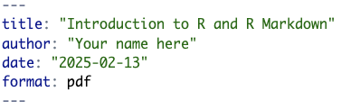
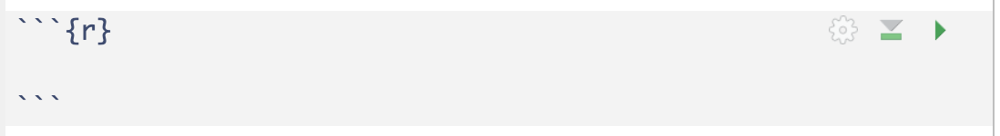

sqrt(4)[1] 2In the Console, type the following code: 1 + 1. What happens?
Nothing!
To execute/run code in the Console, we simply press Enter. Try it! What happens?
Note that spacing doesn’t matter in R code.
We can add (+), subtract (-), multiply (*), divide (/), and perform more complicated calculations using R.
This document that we are working in is called an Quarto markdown document. It allows us to seamlessly move between R code and regular text. The name of the file is easily found at the top this panel. All Quarto markdown files end in ____.
At the top of a markdown topic, you’ll see code between two sets of three dashed lines. This is known as a YAML header, and it contains the “informational” content of a document (e.g. title, author, date). Change these arguments accordingly for each assignment.

Notice the quotation marks! These are extremely important!
Go ahead and change your name in the author argument of the YAML.
How do we tell the document which parts correspond to code, and which parts correspond to text?
In the following, you see three back ticks followed by a left curly brace, the letter r, and right curly brace. A few lines down, you will see three more back ticks. The background in between these lines is gray, with some symbols on the right. These backs ticks must be aligned on the same tabulation.
This defines ______. All of our R code should go into one.

What happens if we delete a back tick?
In the code chunk above, let’s evaluate \(\sqrt{4}\) (the square root of 4). To do this, type the following code: sqrt(4). Now evaluating the code in a code chunk is different from evaluating code in the Console. There are two ways to do so:
1.
2.
At this point it is a good idea to save our progress. Like most document editors, we need to explicitly save our work. You know your work is not saved when _____.
To save our work in Quarto Markdown document, we can do one of the following:
R is more than just a calculator! It provides lots of functionality for performing tasks related specifically to statistics.
Everything in R is an object. Here, we provide a non-exhaustive list of common objects (i.e. structures) you will encounter.
c():A ____ object is either TRUE or FALSE. It is also referred to as a boolean.
Data frames are representations of datasets in R where the rows correspond to observations and columns correspond to variables that describe the observations (more on this later).
When we calculated \(\sqrt{4}\), we used the code sqrt(). This is an example of a function. Functions allow us to automate common tasks in a general way. Functions (just like in math) take in one or more inputs. These inputs are known as _____ or _____. They will almost always return an output. We know a command in R is a function because it has _____.
It is possible for us to create our own customized functions (you definitely will if you take STAT 218). However, in STAT 201, we will work with pre-provided functions. All pre-provided functions in R are accompanied by a Help file. To access the Help file, simply type ? followed by the name of the function in the Console. Try opening the Help file for the sqrt() function.
If I want to obtain the square root of the values 1, 4, 9, and 16, what code can I type?
Suppose I want to save the result of a big calculation to use moving forward. We _____ or ______ the value of 1 + 2 + 3 + 4 + 5 into the ______ called x using the keys <-.
As you should note: when we assign an object a value, its value is not automatically shown as output. In order to display the output, you must _____.
These are always shown in red text in the Console. Whenever you see them, don’t panic! With practice, you will be able to decipher the messages and de-bug your code with ease.
1 + a. What happens?A good reason to render often is to ensure your code is error-free!
Warnings: your code will run with some caveats. It will be prefaced with “Warning:”. We will see examples of this later on.
Messages: messages in red that do not begin with “Error” or “Warning” are simply friendly messages that might provide you more information about the execution of your code.
Packages in R extend the functionality by providing additional functions and data. You can view them as analogous to apps you download from the App Store or Google Play on a cell phone. To use an app on a phone, you have to:
To use a package, we need to:
Unless you update R Studio, you will only need to install a package once. However, you will need to explicitly load in packages every time you work in a new Quarto Markdown document.
There are thousands of available packages to work with. Two of the most common packages we will use are the openintro package and the tidyverse package (though, the tidyverse package is actually a giant package that is comprised of several other packages).
There are two ways to install a package:
install.packages("package name") into the Console. Note that the quotation marks are necessary.We will install the openintro package together.
Then, try installing the tidyverse package on your own!
If we want to use a package, we use the library() command:
Loading required package: airportsLoading required package: cherryblossomLoading required package: usdataThis is an example of a function that does not return an output
You may have seen some red text in your Console when you loaded in the package above. That’s okay!
Rendering the document will turn your Quarto markdown into its final output form. To render, simply click on the blue arrow button up top that reads “Render”. Rendering can take anywhere from a few seconds to a few minutes depending on the amount of code and narrative you have. It will also save your output!
Open your STAT 201 folder. What do you notice happens once we’ve rendered?
When you are finished with your work and ready to submit, you should always render one last time. You should then submit the most recent rendered output (i.e. PDF) to the corresponding Canvas assignment. Sometimes I will also ask you to submit the accompanying .qmd file.